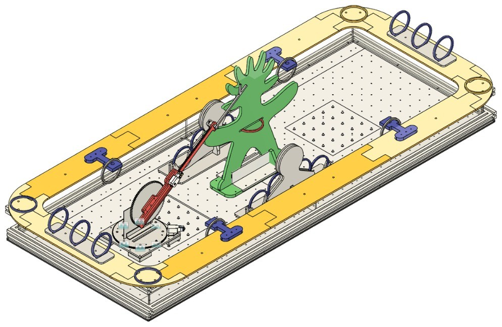
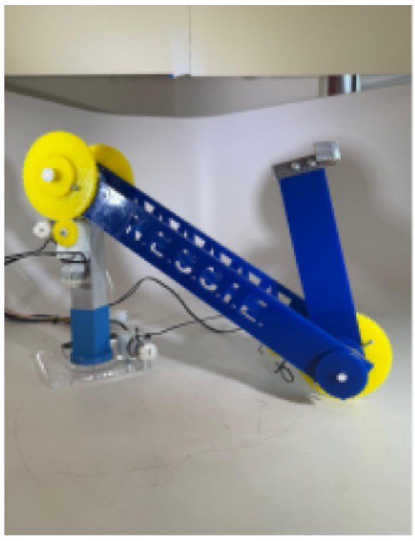
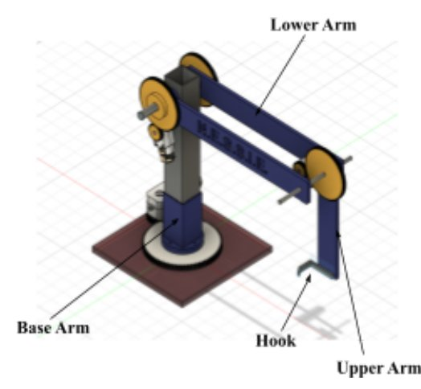

-
MAE3 N.E.S.S.I.E.
A remote-controlled, stationary crane robot for the MAE 3 ring-collecting competition.
Where MAE 3, UC San Diego (Team 27) When 2025 Skills Fusion 360 CAD, free body diagrams, torque and gear analysis, motor characterization Outcome Scored 2,400 of a possible 3,400 points; my lower-arm analysis predicted 35 g of added load and testing held about 140 g My team of four (Isaac Kim, Connor Lin, Pranav Ramesh and I) built N.E.S.S.I.E., short for “Nobody Has Ever Seen Such Spectacular Engineering,” for the Spring 2025 MAE 3 robot competition. In one minute, the robot had to collect rings scattered on one side of the table with a hook and place them on the Sun God statue.

The contest table in CAD: rings around the field, the Sun God statue at the center. Instead of a drivetrain, we gave it reach: a stationary robot with a rotating base, a lower arm, an upper arm and an aluminum hook. The base is 7″ aluminum tubing in a 3D-printed holder, turned through a 60:20 mm gear ratio. The lower arm is a pair of 13″ acrylic arms with a geared motor on each side, and the 7.5″ acrylic upper arm carries the hook.

N.E.S.S.I.E. in its initial position. 
CAD of the final design. My part of the analysis was the lower arm. With quasi-static free body diagrams of the arm and the input gears, I found the arm needs 0.353 N·m to hold itself and the upper arm level, while the two geared motors provide 0.542 N·m (2 × 0.271 N·m, from our force-torque-power-energy measurements). That is a factor of safety of 1.54, and room for about 35 g more at the hook. In testing, the arm held about 140 g before stalling. I traced the gap to treating each arm’s mass as a single point, ignoring the rods and spacers, and to the two motors not delivering equal torque: the angled one was stronger.
Risk reduction on the base arm turned up another problem, since the weight at the end of the arm lifted the output gear off the base plate. A 3D-printed holder and a hubcap inside it fixed that.
On competition day N.E.S.S.I.E. scored 2,400 points, with 8 rings on the third-highest level, against a maximum potential of 3,400. Being stationary limited it to rings within reach, and next time I would use a four-bar linkage for a steadier arm.